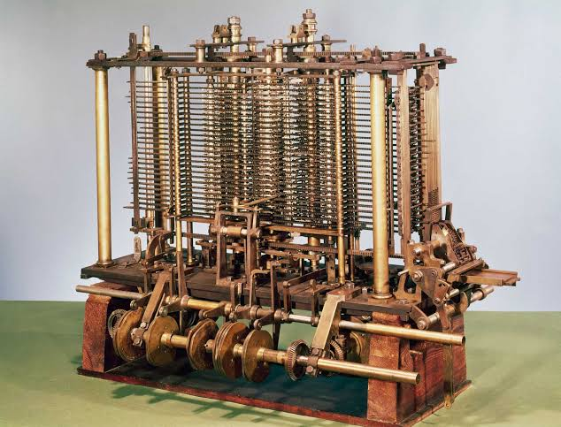

Designed by British mathematician and inventor Charles Babbage in the 1830s.

The Analytical Engine, designed by British mathematician Charles Babbage in 1830's, is celebrated as the world's first blueprint for a general-purpose, programmable computer.
Entirely mechanical and intended to be powered by steam, the brass-geared machine broke away from simple calculators by introducing a design that separates memory (the "Store") from processing (the "Mill"), using a central data bus (the "Rack") to move numbers between them. Controlled by punched cards inspired by the Jacquard textile loom, it was capable of executing sequential instructions, loops, and conditional "if-then" logic—concepts famously utilized by Ada Lovelace to write the very first machine algorithm. Although it was never constructed during Babbage's lifetime due to funding shortages and the precision limits of Victorian engineering, its architecture strikingly foreshadowed the modern computer components we use today.The Mill was the calculating section of the engine. This is where the actual arithmetic operations (addition, subtraction, multiplication, and division) took place. It used a complex system of pegwheels, gears, and barrels to physically manipulate numbers.
The Mill was the calculating section of the engine. This is where the actual arithmetic operations (addition, subtraction, multiplication, and division) took place. It used a complex system of pegwheels, gears, and barrels to physically manipulate numbers.
The Mill was the calculating section of the engine. This is where the actual arithmetic operations (addition, subtraction, multiplication, and division) took place. It used a complex system of pegwheels, gears, and barrels to physically manipulate numbers.
The Mill was the calculating section of the engine. This is where the actual arithmetic operations (addition, subtraction, multiplication, and division) took place. It used a complex system of pegwheels, gears, and barrels to physically manipulate numbers.
Analytical Engine lies in its status as the conceptual blueprint for modern computing, introducing foundational architecture over a century before the electronics era.
By separating the machine into a "Store" for memory and a "Mill" for processing, Charles Babbage anticipated the core structure of today's RAM and CPU. Furthermore, its capacity for programmability via punched cards allowed Ada Lovelace to pioneer the concept of software, demonstrating that a single piece of hardware could execute infinite tasks and make logical adjustments through conditional loops. Although never physically completed in the 19th century, its logical design directly anticipated the digital revolution, proving that the mechanics of computer science were fully realized long before the invention of the microchip.